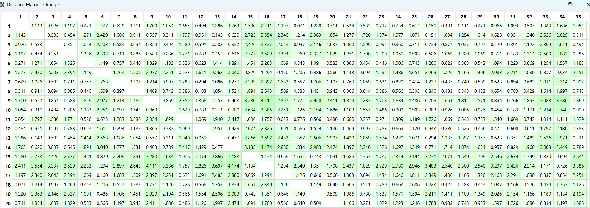
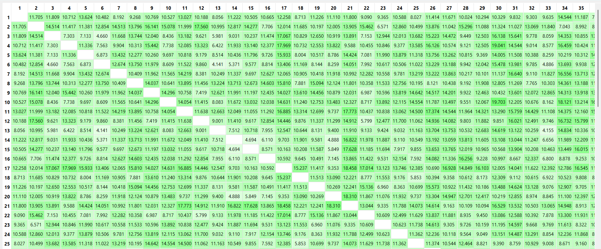

Mengukur Jarak Data (Distance Measurement)#
Dalam data mining, mengukur jarak antara dua data point (baris data) sangat penting untuk mengetahui seberapa mirip atau berbedanya dua data tersebut. Semakin kecil jaraknya, semakin mirip karakteristik datanya.
Berikut adalah dua metode perhitungan jarak yang paling umum digunakan:
1. Euclidean Distance#
Euclidean distance adalah metrik jarak standar yang paling sering digunakan. Metrik ini mengukur panjang garis lurus terpendek antara dua titik dalam ruang n-dimensional.
Rumus: \(d(x,y) = \sqrt{\sum_{i=1}^{n} (x_i - y_i)^2}\)
Keterangan:
\(d(x,y)\) : Jarak antara titik data \(x\) dan \(y\).
\(n\) : Jumlah fitur atau atribut.
\(x_i, y_i\) : Nilai fitur ke-\(i\) dari data \(x\) dan data \(y\).
2. Manhattan Distance#
Manhattan distance (atau City Block distance) mengukur jarak absolut antar titik pada grid bersudut siku-siku (seperti pergerakan mobil di blok-blok jalanan kota), di mana kita hanya bisa bergerak secara vertikal dan horizontal.
Rumus: \(d(x,y) = \sum_{i=1}^{n} |x_i - y_i|\)
Implementasi pada Dataset dengan Orange Data Mining#
Di bawah ini adalah hasil perhitungan Distance Matrix dari dua dataset berbeda yang dieksekusi menggunakan tools Orange Data Mining.
A. Dataset Iris#
Dataset IRIS.csv berisi atribut numerik murni (panjang dan lebar sepal serta petal). Karena semua variabel inputnya berupa angka kontinu, metrik jarak seperti Euclidean sangat ideal digunakan di sini untuk mengelompokkan spesies bunga.
Hasil Perhitungan Jarak (Iris):

B. Dataset Student Performance Factors#
Dataset StudentPerformanceFactors.csv sedikit lebih kompleks karena merupakan mixed data (tipe data campuran). Dataset ini memiliki fitur numerik (seperti Hours_Studied, Exam_Score) dan juga kategorikal (seperti Access_to_Resources, Gender, School_Type). Dalam praktiknya, tools seperti Orange akan melakukan penyesuaian (seperti encoding data kategorikal menjadi numerik atau normalisasi) agar jarak antar siswa tetap bisa dihitung secara matematis.
Hasil Perhitungan Jarak (Student Performance):

3. Minkowski Distance#
Minkowski distance sebenarnya adalah bentuk umum (generalisasi) dari jarak Euclidean dan Manhattan. Metrik ini memiliki parameter tambahan yaitu \(p\).
Jika \(p = 1\), maka menjadi Manhattan Distance.
Jika \(p = 2\), maka menjadi Euclidean Distance.
Rumus: \(d(x,y) = \left( \sum_{i=1}^{n} |x_i - y_i|^p \right)^{\frac{1}{p}}\)
Kapan digunakan? Digunakan ketika kita ingin fleksibilitas dalam mengatur penalti terhadap perbedaan antar variabel dengan mengubah nilai \(p\).
4. Chebyshev Distance#
Chebyshev distance (juga dikenal sebagai chessboard distance) mengukur jarak absolut maksimum antara fitur dari dua titik data. Bayangkan gerakan raja di papan catur yang bisa bergerak ke segala arah; jaraknya adalah jumlah langkah minimum yang dibutuhkan.
Rumus: \(d(x,y) = \max_{i} |x_i - y_i|\)
Kapan digunakan? Sering digunakan dalam logistik atau ketika kita hanya peduli pada perbedaan terbesar (maksimum) di antara semua atribut data.
5. Cosine Distance (dan Cosine Similarity)#
Berbeda dengan jarak sebelumnya yang mengukur panjang garis antar titik, Cosine mengukur sudut antara dua vektor data. Semakin kecil sudutnya, semakin mirip datanya, terlepas dari seberapa besar ukurannya (magnitude).
Rumus Cosine Similarity: \(\text{sim}(x,y) = \frac{\sum_{i=1}^{n} x_i y_i}{\sqrt{\sum_{i=1}^{n} x_i^2} \sqrt{\sum_{i=1}^{n} y_i^2}}\)
Rumus Cosine Distance: \(d(x,y) = 1 - \text{sim}(x,y)\)
Kapan digunakan? Sangat populer untuk Text Mining (seperti mengukur kemiripan dua dokumen teks) atau Recommender Systems.
6. Hamming Distance#
Hamming distance khusus digunakan untuk data kategorikal atau binary (0 dan 1). Jarak ini dihitung berdasarkan jumlah atribut yang nilainya berbeda antara dua data.
Rumus: \(d(x,y) = \sum_{i=1}^{n} \delta(x_i, y_i)\) di mana \(\delta(x_i, y_i) = 1\) jika \(x_i \neq y_i\), dan \(0\) jika \(x_i = y_i\).
Kapan digunakan? Sangat cocok untuk dataset yang berisi tipe data kategorikal, seperti mengecek kemiripan dua baris genetik, atau data seperti “Ya/Tidak” dan “Laki-laki/Perempuan”.
Perhitungan Jarak Berdasarkan Tipe Atribut#
Dalam praktiknya, dataset jarang sekali hanya berisi satu tipe data. Misalnya, kita bisa memiliki kolom umur (angka), jenis kelamin (kategori), dan tingkat kepuasan (urutan/tingkatan). Kita tidak bisa menggunakan rumus Euclidean biasa untuk memproses kata seperti “Laki-laki” dan “Perempuan”.
Oleh karena itu, perhitungan jarak harus disesuaikan dengan tipe atributnya. Berikut adalah penjelasan dan rumus untuk masing-masing tipe atribut:
1. Atribut Numerik (Kuantitatif)#
Atribut numerik adalah data berupa angka yang memiliki makna matematis (contoh: Exam_Score, Hours_Studied, panjang daun).
Untuk membandingkan dua data numerik, kita biasanya menghitung selisih absolutnya. Namun, karena rentang tiap kolom bisa berbeda (misal: nilai ujian 0-100, sedangkan jam belajar 1-10), kita wajib melakukan normalisasi agar tidak ada fitur yang mendominasi perhitungan jarak.
Rumus Jarak Atribut Numerik (Fitur ke-\(f\)): $\(d_{ij}^{(f)} = \frac{|x_{if} - x_{jf}|}{\max(f) - \min(f)}\)$
Keterangan:
\(d_{ij}^{(f)}\) : Jarak antara data ke-\(i\) dan ke-\(j\) pada atribut/fitur ke-\(f\).
\(x_{if}, x_{jf}\) : Nilai asli dari data ke-\(i\) dan data ke-\(j\).
\(\max(f) - \min(f)\) : Rentang (selisih nilai maksimum dan minimum) dari seluruh data pada atribut tersebut.
2. Atribut Nominal (Kategorikal Tanpa Urutan)#
Atribut nominal adalah data berupa kategori atau label yang tidak memiliki tingkatan (contoh: Gender, School_Type, Internet_Access).
Karena tidak ada angka yang bisa dikurangkan, perhitungannya sangat sederhana: Jika nilainya sama, jaraknya 0. Jika nilainya berbeda, jaraknya 1. (Ini adalah dasar dari Hamming Distance).
Rumus Jarak Atribut Nominal: $\(d_{ij}^{(f)} = \begin{cases} 0, & \text{jika } x_{if} = x_{jf} \\ 1, & \text{jika } x_{if} \neq x_{jf} \end{cases}\)$
3. Atribut Ordinal (Kategorikal Berurutan)#
Atribut ordinal adalah data kategori yang memiliki urutan atau tingkatan bermakna (contoh: Motivation_Level = Low, Medium, High).
Langkah perhitungannya:
Ubah nilai kategori menjadi angka peringkat atau rank (\(r_{if}\)). Misalnya: Low = 1, Medium = 2, High = 3.
Normalisasikan peringkat tersebut menjadi nilai rentang 0 hingga 1 menggunakan rumus: $\(z_{if} = \frac{r_{if} - 1}{M_f - 1}\)\( *(di mana \)M_f$ adalah jumlah total tingkatan/kategori yang ada).*
Setelah menjadi angka berentang 0-1, hitung jaraknya sama seperti atribut numerik: $\(d_{ij}^{(f)} = |z_{if} - z_{jf}|\)$
4. Atribut Biner (Dua Nilai)#
Biner adalah tipe khusus dari nominal yang hanya punya dua kemungkinan (contoh: Lulus/Gagal, Ya/Tidak).
Biner Simetris: Kedua nilai sama-sama penting (seperti Gender Laki-laki/Perempuan). Dihitung persis seperti atribut Nominal.
Biner Asimetris: Salah satu nilai lebih penting atau langka (misal: “Positif” pada tes penyakit lebih penting dari “Negatif”). Jika data ke-\(i\) dan ke-\(j\) sama-sama bernilai “Negatif”, atribut ini seringkali diabaikan dalam perhitungan jarak karena tidak memberikan informasi kemiripan yang bermakna.
Menggabungkan Semuanya: Gower’s Distance#
Ketika dataset kita memiliki campuran atribut numerik, nominal, dan ordinal (seperti dataset Student Performance), kita menggabungkan perhitungan di atas menjadi satu rumus umum yang disebut Gower’s Distance.
Rumus Keseluruhan: $\(d(i,j) = \frac{\sum_{f=1}^{n} \delta_{ij}^{(f)} d_{ij}^{(f)}}{\sum_{f=1}^{n} \delta_{ij}^{(f)}}\)$
Keterangan:
\(d(i,j)\) : Total jarak antara baris data \(i\) dan \(j\).
\(n\) : Jumlah total atribut/kolom.
\(d_{ij}^{(f)}\) : Jarak antara data \(i\) dan \(j\) pada atribut ke-\(f\) (menggunakan rumus-rumus di atas sesuai tipe datanya).
\(\delta_{ij}^{(f)}\) : Indikator validitas (bernilai 1 jika kedua data memiliki nilai yang valid/tidak missing pada atribut ke-\(f\), dan 0 jika salah satu data kosong atau missing value).